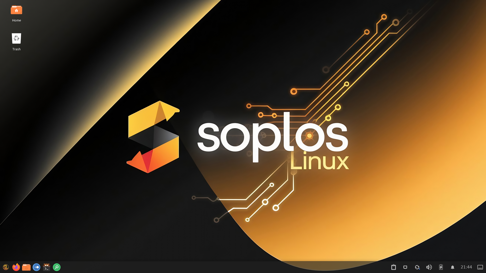
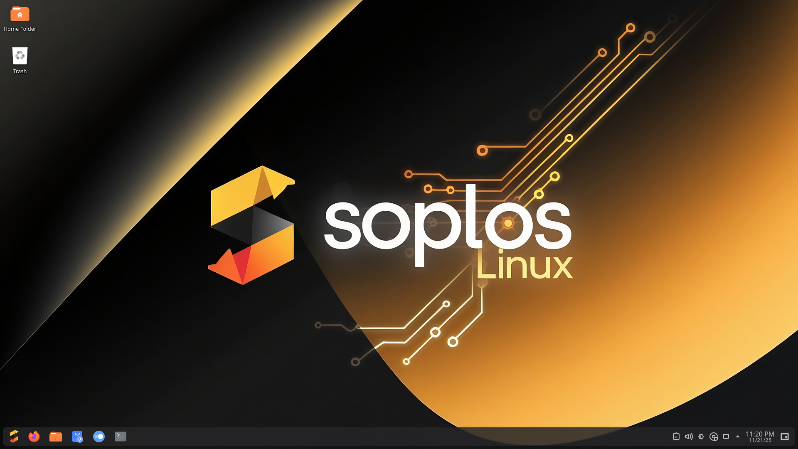
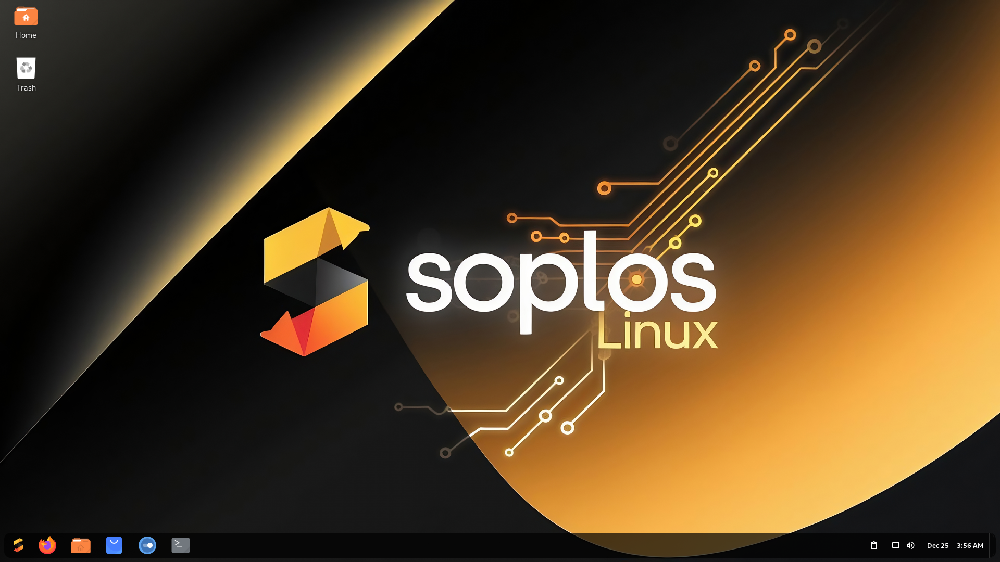

ES
ES FR
FR PT
PT DE
DE IT
IT RO
RO RU
RUSlopOS Linux
The newest version of your friendly operating system is ready. Install SlopOS Linux on your computer today!
Features
Why SlopOS Linux?
SlopOS Linux is a modern operating system for desktops and laptops, designed for reliability, ease of use, and productivity. It comes pre-installed with essential applications and is ready to use from the first boot.
Easy Browsing
Enjoy effortless internet navigation with Firefox. Access your favorite websites and watch YouTube videos with a fast, secure, and user-friendly experience.
Productivity
Feel free to use your favorite office suite to work comfortably and efficiently. SlopOS Linux lets you choose the tools that best fit your workflow.
For Content Creators
Specially designed for content creators who need multimedia tools for audio and video production.
Designed for Designers
Carefully crafted so you can work with graphic tools like Blender, GIMP, and Inkscape.
For Gamers
Play your favorite games with Steam, Heroic Launcher, Lutris, and Retrogames. SlopOS Linux includes gaming-optimized kernels for the best experience.
Feel Free
The first step to escape from Windows is easy with SlopOS Linux.
We make your transition simple, friendly, and enjoyable.
Galleries

Tyron XFCE Desktop

Tyson Plasma Desktop

Boro GNOME Desktop
Ready for More?
Discover the unique tools that make SlopOS Linux truly yours.
Welcome, customize, manage and enjoy your desktop experience.
SlopOS Exclusive Apps
Discover the applications developed exclusively for SlopOS Linux. These tools allow you to customize, manage, and enhance your experience on Tyron and Tyson desktops.
Tyron (XFCE)
Tyson (Plasma 6)
Boro (GNOME)
Is your device ready?
Check the minimum and recommended requirements to enjoy SlopOS Linux
without limits.
Your next experience starts here!
System Requirements
Tyron (XFCE) - System Requirements
System base
- Based on Debian Testing
- XFCE 4.20.1 desktop environment
- Linux kernel 7.1.3-slopos
- X11 window system with PipeWire 1.6.4
- SlopOS Linux Tyron RC4
- x86_64 architecture with APT package manager
System requirements
Minimum:
- Processor: Dual core 2.0 GHz
- RAM: 2 GB
- Storage: 20 GB
- Graphics: OpenGL 2.0 compatible
Recommended:
- Processor: Quad core 2.4 GHz
- RAM: 4 GB
- Storage: 30 GB SSD
- Graphics: Dedicated 1GB VRAM
Optimizations
- Fast boot with optimized systemd
- Enhanced memory management with optimized configuration
- File system tuned for SSD
- Audio PipeWire 1.6.4 for better multimedia performance
Included software
- SlopOS Repo Selector 2.0.3
- SlopOS Welcome 2.1.0-6
- SlopOS Welcome Live 2.0.2-7
- slopos-system-service 1.0.0-5
- zsh-slopos 0.0.1-4
- ghostty-slopos 0.0.1-8
- zram-slopos 0.0.1-2
Customization
- Preconfigured visual themes and styles
- Integrated theme manager for quick changes
- Simple font and appearance options
Security and Privacy
- Based on Debian's solid security
- Regular security updates
- Preconfigured firewall for increased protection
- Enhanced privacy options
Tyson (Plasma 6.6.5) - System Requirements
System base
- Based on Debian Testing
- KDE Plasma 6.6.5 desktop environment
- Linux kernel 7.1.3-slopos
- x86_64 architecture support
- PipeWire 1.6.4
- Package manager: APT (Debian/Ubuntu)
- Window system: Wayland
- SlopOS Linux Tyson RC4
System requirements
Minimum:
- Processor: Dual core 2.4 GHz
- RAM: 4 GB
- Storage: 35 GB
- Graphics: OpenGL 3.3 compatible
Recommended:
- Processor: Quad core 3.0 GHz or higher
- RAM: 8 GB or more
- Storage: 50 GB NVMe SSD
- Graphics: Dedicated 4GB VRAM
Optimizations
- Fast boot with optimized systemd
- Enhanced memory management with optimized configuration
- File system tuned for SSD
- Kernel options for better desktop performance
Included software
- SlopOS Repo Selector 2.0.3
- SlopOS Welcome 2.1.0-6
- SlopOS Welcome Live 2.0.2-7
- slopos-system-service 1.0.0-5
- zsh-slopos 0.0.1-4
- ghostty-slopos 0.0.1-3
- zram-slopos 0.0.1-2
Customization
- Preconfigured visual themes and styles
- Integrated theme manager for quick changes
- Simple font and appearance configuration
- Variety of icons and cursors available
Security and Privacy
- Based on Debian's solid security
- Regular security updates
- Preconfigured firewall for increased protection
- Enhanced privacy options
Boro (GNOME 50) - System Requirements
System base
- Based on Debian Testing
- GNOME 50 desktop environment
- Linux kernel 7.1.3-slopos
- Window system: Wayland
- SlopOS Linux Boro RC4
- x86_64 architecture with APT package manager
System requirements
Minimum:
- Processor: Dual core 2.0 GHz
- RAM: 4 GB
- Storage: 25 GB
- Graphics: OpenGL 3.3 compatible
Recommended:
- Processor: Quad core 2.4 GHz
- RAM: 8 GB
- Storage: 50 GB SSD
- Graphics: Dedicated 2GB VRAM
Optimizations
- Fast boot with optimized systemd
- Enhanced memory management with optimized configuration
- File system tuned for SSD
- Audio PipeWire 1.6.4 for better multimedia performance
Included software
- SlopOS Repo Selector 2.0.3
- SlopOS Welcome 2.1.0-6
- SlopOS Welcome Live 2.0.2-7
- slopos-system-service 1.0.0-5
- zsh-slopos 0.0.1-4
- ghostty-slopos 0.0.1-4
- zram-slopos 0.0.1-2
Customization
- Preconfigured visual themes and styles
- Integrated theme manager for quick changes
- GNOME Extensions preinstalled for customization
- Simple font and appearance options
Security and Privacy
- Based on Debian's solid security
- Regular security updates
- Preconfigured firewall for increased protection
- Enhanced privacy options
Download SlopOS Linux
SHA-256 Checksums:
Tyron (XFCE):
9d05e9bfc70ba00b56b0aa7b9078daecd8563c9534eadb97902584e1227a946f
Tyson (Plasma):
591820ab993e06ac64dc95b310e3519c61c33314962f418b01ac74796be217ea
Boro (GNOME):
7479c625c88b82ff473ade3bb56bc125e6ecaeaf2aaf042e0a4c8951feb1d580